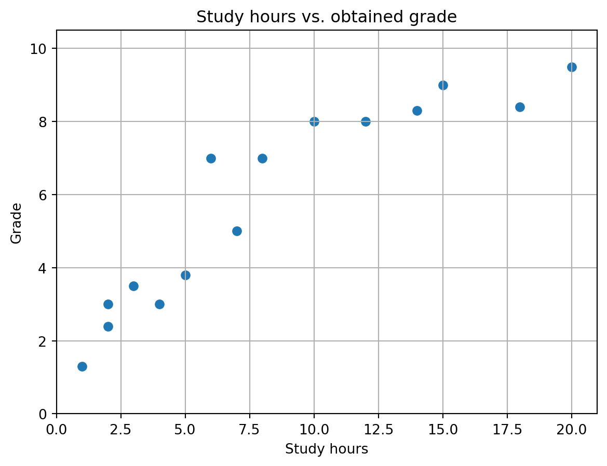
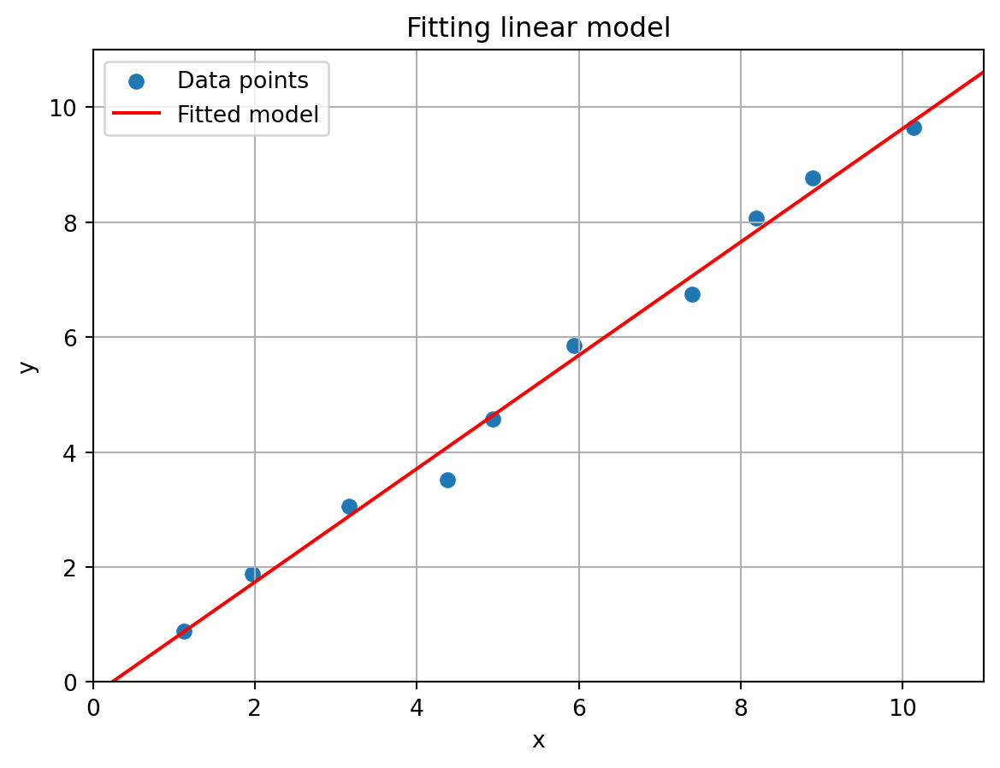
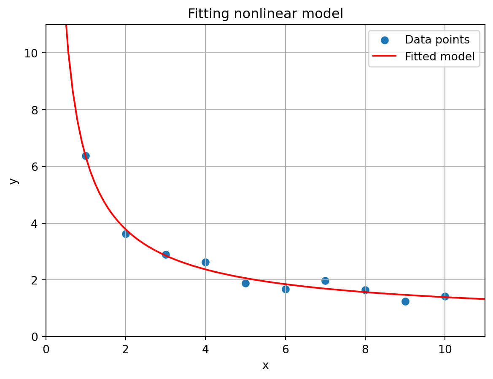
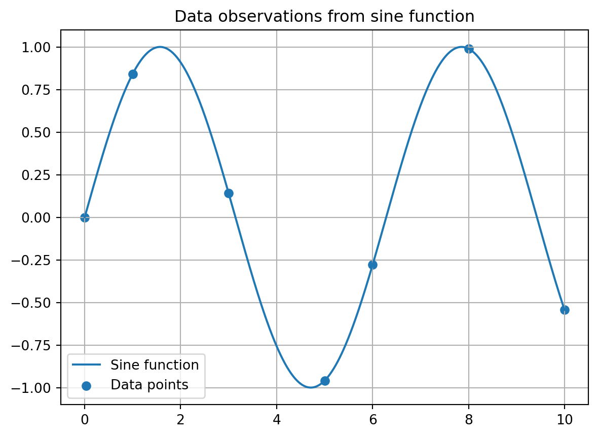
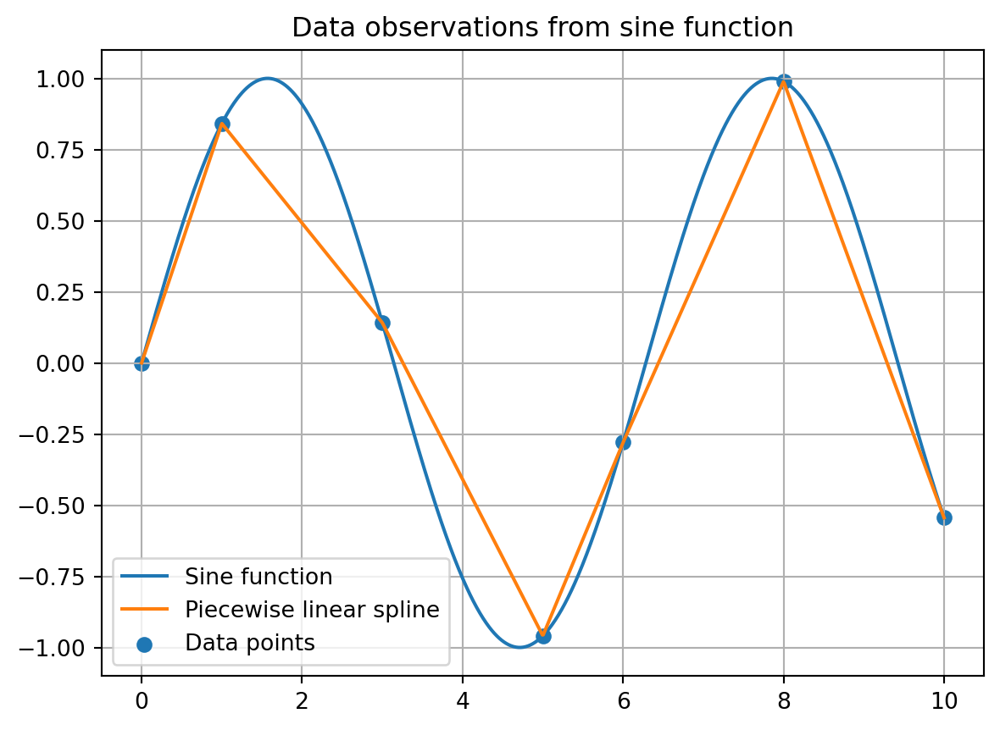

In this chapter we will study some data analysis techniques that are often used in statistics and data science. We first consider statistical coefficients that can determine whether two or more data arrays exhibit correlation or not. Afterwards, we look at various fitting techniques to fit a function to given data: Regression, interpolation and distributional fitting.
9.1 Correlation coefficients
Suppose we have collected two features of a group of n people, their weight (kg) and height (cm), in arrays x = [x_0,\dots,x_{n-1}] and y = [y_0,\dots,y_{n-1}], respectively. One might expect some correlation between these two features, as taller people typically weigh a bit more than shorter people. One way to quantify such relations is to compute a correlation coefficient of the data.
9.1.1 Pearson coefficient
The Pearson correlation coefficient for these arrays is defined as
where \bar{x} and \bar{y} are the means (or averages) of the vectors x and y, respectively. It holds that P(x,y) \in [-1,1] with the interpretation that the larger |P(x,y)| is, the more correlation (positive or negative) the arrays have.
NumPy has a built-in function corrcoef() to compute the Pearson coefficient of the arrays x and y. In fact, this function works in a vectorized way. If we input a two-dimensional array, then this function computes the Pearson coefficient for every pair of rows of the array.
import numpy as npimport scipy.stats# Heightsx = np.array([187, 174, 179, 192, 188, 160, 179, 168, 168, 174])# Weightsy = np.array([94, 88, 91, 96, 95, 80, 91, 84, 85, 86])data = np.vstack((x,y)) # Store data in two-dimensional arrayP = np.corrcoef(data)print(P)
[[1. 0.98888612]
[0.98888612 1. ]]
Note that there will always be ones on the diagonal as the first row is perfectly correlated with itself, and that this matrix is symmetric since P(X,Y) = P(Y,X). Let us also add a feature (age) which is not really correlated with the other two features and recompute the Pearson coefficients.
As you can see, the correlation coefficients of the height-age (\approx 0.21) and heigh-weight (\approx 0.24) combinations is rather low.
The stats module of SciPy also has a built-in function pearsonr() to compute the Pearson coefficient of two arrays of feature data. This function also performs some additional hypothesis testing on the data, but can unfortunately not handle two-dimensional arrays as input.
If you only want to compute the coefficient for two features, then this function is also suitable, but if you want to compute a correlation coefficient matrix like above, corrcoef() is the better choice.
9.1.2 Spearman rank coefficient
Another famous correlation coefficient is the Spearman rank coefficient. Whereas the Pearson correlation is useful when you expect a linear relation between the two features under consideration, the Spearman coefficient is more useful when you expect only a monotone, but non necessarily linear, relation. Monotone here means that when the value of the first feature becomes larger, the value of the second feature also becomes larger.
There are other factors that determine whether the Pearson or Spearman coefficient is more suitable, but we omit those here.
Suppose we have collected data about the number of hours that students study for an exam and their grade. One might expect that students who have studied more hours also have obtained a higher grade, but it is not to be expected that this relation is linear. For example, studying a double number of hours is not always guaranteed to double your grade.
We have collected some data in the arrays hours and grade with hours[i] denoting the number of hours that student i studied, and grade[i] the grade this student obtained. That data is visualized below as well. Note that in the figure one can see a monotone relation between the features (study hours and grade), but this relation is not linear.
import matplotlib.pyplot as plt# Create figureplt.figure()# Create scatter plot of data pointsplt.scatter(hours,grade)# Set axes limitsplt.xlim(0,np.max(hours)+1)plt.ylim(0,np.max(grade)+1)# Set axes labelsplt.xlabel("Study hours")plt.ylabel("Grade")# Set titleplt.title("Study hours vs. obtained grade")# Create gridplt.grid()# Show plotplt.show()

The determine the Spearman rank coefficient, we first compute the ranks of the data of the features. The smallest value in a feature array gets rank 1, the second smallest rank 2, etc. This can be done with the rankdata() function from the stats module.
# Ranks of study hours valuesranks_hours = scipy.stats.rankdata(hours)print(ranks_hours)
There is a built-in function spearmanr() that carries out the two steps mentioned above. This function is vectorized in the sense that if we put in a two-dimensional array, then every column is interpreted as the data corresponding to a feature, and the correlation between different columns is computed. If the data of a feature is given as a row, we can set the axis keyword argument to axis=1.
This function spearmanr() outputs the Spearman rank coefficient and a p-value. You can read about the latter in the documentation. The rank coefficient is stored in the statistic attribute.
print(S.statistic)
0.9811843713228874
Alternatively, you can suppress the p-value output argument to only get the rank coefficient.
S, _ = scipy.stats.spearmanr(data,axis=1)print(S)
0.9811843713228874
9.1.3 Other coefficients
There are many other correlation coefficients that can be computed with Python, see here for a list. A large collection of statistical tests has also been implemented in the stats module.
9.2 Data fitting
In this section we will see various ways in which you can compute a function that fits given data best, using regression, (polynomial) interpolation, or distributional fitting.
9.2.1 Regression
In a regression model, we are given a relation of the form
y_i = f(x_i,\beta) + \epsilon_i
where f : \mathbb{R}^{n + k} \rightarrow \mathbb{R} is a known function, (x_i,y_i) known data points for i = 0,\dots,m-1, with x_i = [x_{i0},\dots,x_{(n-1)0}] \in \mathbb{R}^n and y_i \in \mathbb{R}. The term \epsilon_i is an unknown error term that is often assumed to be normally distributed. Its exact distribution is not relevant at this point, because we assume it is unknown.
The goal is to determine a vector \beta = [\beta_0,\dots,\beta_{k-1}] \in \mathbb{R}^k that minimizes a given error function. The most well-known choice here is to minimize the sum of the squared errors, i.e., to find a solution to the problem
Note that \beta = [\beta_0,\dots,\beta_{k-1}] is the only unknown in the right hand side expression above. In other words, this problem tries to find the least squares solution to the system of m equations given by
y_i - f(x_i,\beta) = 0
for i =0,\dots,m-1. An exact solution does not exist because of the (unknown) error terms \epsilon_i.
Let us look at a simple form of linear regression where n = 1 and k = 2. That is, we have f: \mathbb{R} \rightarrow \mathbb{R} defined by f(x) = \beta_0 + \beta_1x. Suppose we are given data points (x_i,y_i) \in \mathbb{R}^2 for i = 0,\dots,m-1. Note that x_i is a scalar and not an array in this case, because n = 1. We are looking for a \beta = [\beta_0,\beta_1] that solves the system
\begin{pmatrix}
1 & x_1 \\
1 & x_2 \\
\vdots & \\
1 & x_m
\end{pmatrix}\begin{pmatrix}\beta_0 \\ \beta_1\end{pmatrix}
=
\begin{pmatrix}
y_1 \\
y_2 \\
\vdots \\
y_m
\end{pmatrix}.
Because of the error term in the regression model (and the fact that this system is overdetermined), we compute a least squares solution. We have already seen various functions that can do this for us, in particular least_squares from SciPy’s optimize module.
Recall from Chapter 6 that least_squares takes as input an array of functions g_0(\beta),\dots,g_{m-1}(\beta) and then minimizes over \beta the expression \sum_i g_i(\beta)^2. In our case we have g_i(\beta) = y_i - f(x_i,\beta) = y_i - (\beta_0 + \beta_1x_i).
Below we create the function model() whose output is the array
\begin{pmatrix}
y_0 - f(x_0,\beta) \\
y_1 - f(x_1,\beta) \\
\vdots \\
y_{m-1} - f(x_{m-1},\beta)
\end{pmatrix}.
This function will serve as the input for least_squares(). To keep the code clean, we create a separate Python function for f.
import scipy.optimize as optimize# Function fdef f(x,beta):return (beta[0] + beta[1]*x)# System of error termsdef model(beta,x,y): # beta is first input here; later optimized overreturn y - f(x,beta)
It is important that \beta is the first input argument of model() as this will be the array that we optimize over when looking for a least squares solution. For the function f, we could have also reversed the input arguments.
We next generate some synthetic (x_i,y_i) data points.
# Fix random seednp.random.seed(42)# Number of data pointsm =10# Create points (1,1), (2,2), ..., (m,m) with some random noise.x = np.arange(1,m+1) +0.25*np.random.randn(m)y = np.arange(1,m+1) +0.25*np.random.randn(m)
Next, we perform least_squares on the linear model define above. Recall that this function needs an initial guess for the parameters in \beta to be fitted. Also, we need to use the args keyword argument to specify x and y, which are the additional input arguments of our model() function that are fixed (i.e., are not optimized over).
# Set initial guessguess = np.array([2,2])# Perform least squares methodresult = optimize.least_squares(model,x0=guess,args=(x,y))# Print fitted parametersprint(result)
The values in \beta can be found in the x attribute
beta = result.xprint(beta)
[-0.23404544 0.98652277]
Finally, we plot the (x_i,y_i) data points together with the fitted line f(x) = \beta_0 + \beta_1 x to visually inspect our fitting procudure.
Show code generating the plot below
# Determine x- and y-values for the fitted linex_line = np.linspace(0,11,100)y_line = f(x_line,beta)# Create figureplt.figure()# Scatter plot of data pointsplt.scatter(x,y,label="Data points")# Plot fitted lineplt.plot(x_line,y_line,c='r',label="Fitted model")# Set axes limitsplt.xlim(0,m+1)plt.ylim(0,m+1)# Set axes labelsplt.xlabel("x")plt.ylabel("y")# Set titleplt.title("Fitting linear model")# Create gridplt.grid()# Create legendplt.legend()# Show plotplt.show()

One should recall that because of the fact that f is linear in the parameters in \beta, we could have also used the linalg.lstsq() function from Numpy. Although you do not need to fully understand the code below, we include it here for sake of reference.
# Create left hand side matrix of system aboveA = np.vstack((np.ones(m),x)).T# Right hand side vector of systemb = y# We add rcond=None to avoid a warning raised by Pythonresult = np.linalg.lstsq(A,b,rcond=None)[0] # First output is our betaprint(result)
[-0.23404544 0.98652277]
Most importantly, least_squares is also able to handle non-linear function f in our regression framework, for example
y_i = \left(\frac{\beta_0 + \sqrt{x_i}}{\beta_1\sqrt{x_i}} \right)^2 + \epsilon_i
for i = 0,\dots,m-1. Note that also here n = 1 and k = 2.
Carrying out the same steps as above we obtain the following code to fit this function on given synthetic (x_i,y_i) data points.
# Fix random seednp.random.seed(42)# Function fdef f(x,beta):return ((beta[0] + np.sqrt(x))/(beta[1]*np.sqrt(x)))**2# Define the non-linear modeldef model(beta,x,y):return y - f(x,beta)# Number of data pointsm =10# These will be the choice of beta for which we generate the databeta_true = np.array([4,2])#Generate synthetic data points with some random noise.x = np.arange(1,m+1) y = f(x,beta_true) +0.25*np.random.randn(m) # Set initial guessguess = np.array([1,1])# Perform least squares method on x,y dataresult = optimize.least_squares(model,x0=guess,args=(x,y))# Fitted parametersbeta_fit = result.xprint(beta_fit)
[3.49914009 1.78657584]
Show code generating the plot below
# Determine x- and y-values for the fitted linex_line = np.linspace(0.01,11,100)y_line = f(x_line,beta_fit)# Create figureplt.figure()# Scatter plot of data pointsplt.scatter(x,y,label="Data points")# Plot fitted lineplt.plot(x_line,y_line,c='r',label="Fitted model")# Set axes limitsplt.xlim(0,m+1)plt.ylim(0,m+1)# Set axes labelsplt.xlabel("x")plt.ylabel("y")# Set titleplt.title("Fitting nonlinear model")# Create gridplt.grid()# Create legendplt.legend()# Show plotplt.show()

9.2.2 Interpolation
If we want to create a function that goes exactly through given data points, we can do this with interpolation. Suppose we have some data points from the function f(x) = \sin(x) given below.
Let us plot the sine function and the data points that we created.
# x-range for plottingx_plot = np.linspace(np.min(x), np.max(x), 1000) # Define range based on data points# Plotting sine functionplt.plot(x_plot, f(x_plot), label='Sine function')# Plotting data pointsplt.scatter(x, y, label='Data points')# Set titleplt.title('Data observations from sine function')# Set legendplt.legend()# Create gridplt.grid()# Show figureplt.show()

Suppose now that we would only know the data points. Polynomial interpolation asks for a piecewise polynomial that passes through all the data points, i.e., a function that is is a polynomial between any two consecutive data points. This is also often referred to as spline interpolation.
SciPy has a built-in function make_interp_spline() in its interpolate module that can yield such a polynomial. It takes as first two inputs arrays the x- and y-coordinates it should pass through.
Furthermore, the keyword argument k allows you to choose the degree of the polynomial on every segment formed by two consecutive data points.
Below we create an interpolation that is a linear between any two data point, i.e., we have k = 1. In other words, this form of interpolation simply connects consecutive data points with a straight line segment.
The make_interp_spline() function creates an object that acts as a function, i.e., we can input a scalar or array into it and get back the function values in inputted points.
import scipy.interpolate as interpolate# Creates a so-called BSpline objectlinear_spline = interpolate.make_interp_spline(x,y,k=1)# Object can be evaluated in vectorized fashiona = np.array([1,2,3])print(linear_spline(a))
[0.84147098 0.4912955 0.14112001]
Let us compare the interpolation polynomial with the original sine function in a figure.
Show code generating the plot below
# x-range for plottingx_plot = np.linspace(0, 10, 1000)# Plotting sine functionplt.plot(x_plot, f(x_plot), label='Sine function')# Plotting first degree interpolation polynomialplt.plot(x_plot, linear_spline(x_plot), label='Piecewise linear spline')# Plotting data pointsplt.scatter(x, y, label='Data points')# Set titleplt.title('Data observations from sine function')# Set legendplt.legend()# Create gridplt.grid()# Show figureplt.show()

9.2.3 Distributional fitting
It is possible to fit the parameters of a known distribution to given data samples using the fit() function of a distribution object. For example, suppose you suspect your data comes from a normal distribution, but do not know its mean and standard deviation.
Below we generate some data from a normal distribution.
# Fix randomnessnp.random.seed(3)# Samples from normal distribution with given mean and standard dev.n =1000samples = np.random.normal(loc=5,scale=3,size=n)
Now pretend we are given x but do not know the loc and scale parameters that were used to create this array. We can fit the data in x on a normal distribution with the fit() function from the stats module. The output of this function is a tuple with the fitted parameters of the distribution, typically the first one being the location and the second one the scale parameter.
The syntax for the fit() function is scipy.stats.distribution_name.fit() where distribution_name is the name of the distribution that we want to fit the data on; see here all the available options.
Let us fit the data on a normal distribution, with norm as choice for distribution_name.
print("Estimated mean is", parameters[0])print("Estimated standard deviation is", parameters[1])
Estimated mean is 5.051852998942502
Estimated standard deviation is 3.0252056971538166
If you know one of the scale or location parameters, you can fix these using the floc or fscale keyword arguments. For example, suppose we know that the mean of the data that the distribution was generated from is equal to 5, then we can set floc=5.
mu, sigma = scipy.stats.norm.fit(x, floc=5)print("Estimated mean is", mu)print("Estimated standard deviation is", sigma)
Estimated mean is 5
Estimated standard deviation is 3.3806170189140663
The fit function uses (as default) the maximium likelihood esitmation method to determine the distributional parameters that fit the data best.
To inspect whether the returned fitted parameters accurately represents the data, we can visualize the data samples and the fitted distribution in a histogram. We plot the samples using plt.hist(). We have seen this function before in one of the exercises.
The first input argument of the hist() function is the list of samples for which we want to create the histogram. The bins keyword argument specifies the number of bars in the histogram, and density=True rescales the histogram so that the total area of the bars equal 1 (which is the same value you get by integrating the area under the probability density function of a distribution).
# Fit datamu, sigma = scipy.stats.norm.fit(samples)# Round coefficientsmu = np.around(mu,decimals=2)sigma = np.around(sigma,decimals=2)# Create an array of x values for plotting the PDFx = np.linspace(np.min(samples), np.max(samples), 100)# Create figureplt.figure()# Compute PDF-values of elemetns in x for fitted normal distributionpdf_norm_fit = scipy.stats.norm.pdf(x, mu, sigma)# Plot the histogram of the dataplt.hist(samples, bins=30, density=True, label='Sample data')# Plot the fitted normal distributionplt.plot(x, pdf_norm_fit, label=f'Normal fit: mu={mu}, std={sigma}')# Add labels and legendplt.xlabel('Value')plt.ylabel('Density')plt.legend()# Show plotplt.show()